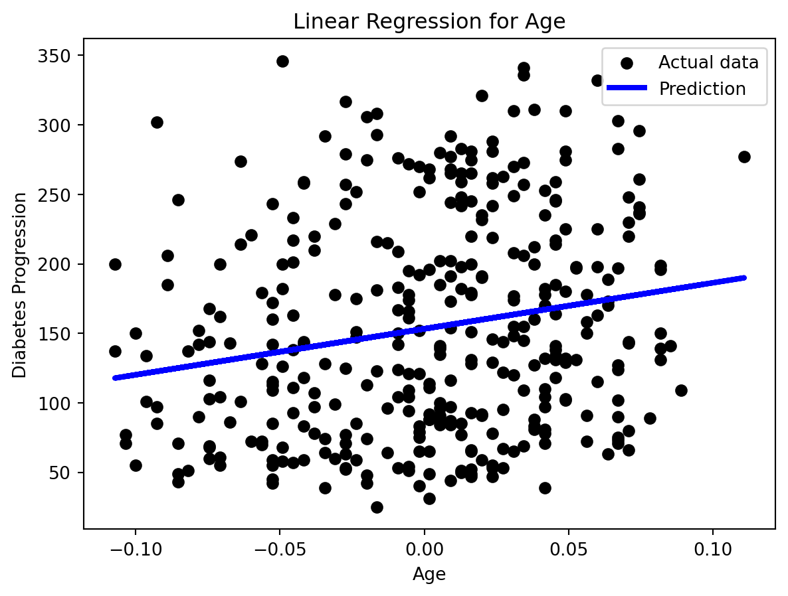
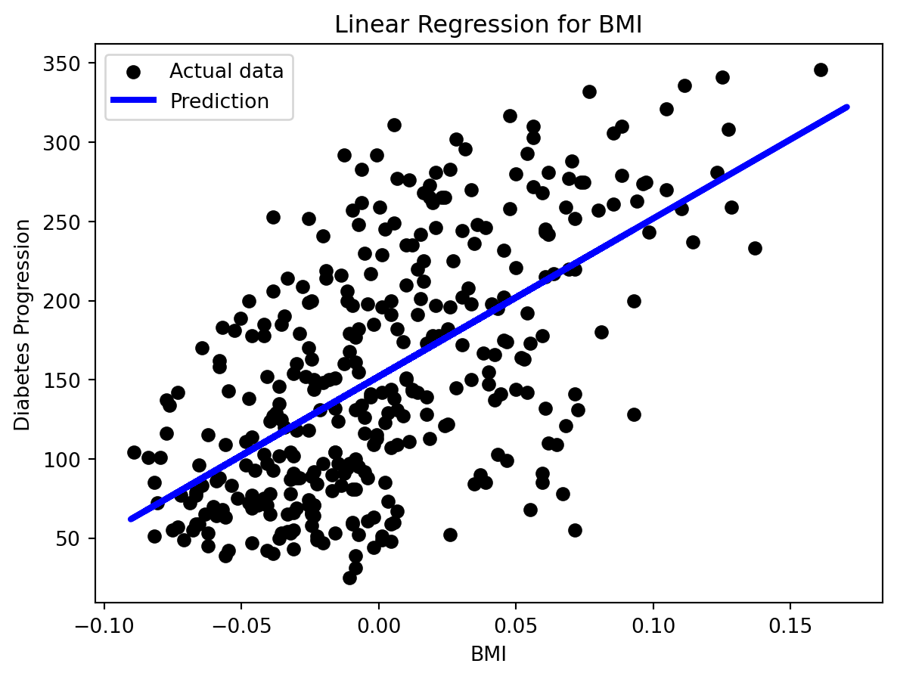

Imports
import numpy as np
import pandas as pd
import matplotlib.pyplot as pltMark Hamilton
December 2, 2023
Regression is a type of supervised machine learning that predicts the target value of each input data point. Regression is for predicting continuous values, while classification is for predicting discrete classes. Let’s use the diabetes dataset from scikit-learn to explore regression.
from sklearn.datasets import load_diabetes
diabetes = load_diabetes()
print(f"Shape of dataset: {diabetes.data.shape}")
pd.DataFrame(diabetes.data, columns=diabetes.feature_names).head()Shape of dataset: (442, 10)| age | sex | bmi | bp | s1 | s2 | s3 | s4 | s5 | s6 | |
|---|---|---|---|---|---|---|---|---|---|---|
| 0 | 0.038076 | 0.050680 | 0.061696 | 0.021872 | -0.044223 | -0.034821 | -0.043401 | -0.002592 | 0.019907 | -0.017646 |
| 1 | -0.001882 | -0.044642 | -0.051474 | -0.026328 | -0.008449 | -0.019163 | 0.074412 | -0.039493 | -0.068332 | -0.092204 |
| 2 | 0.085299 | 0.050680 | 0.044451 | -0.005670 | -0.045599 | -0.034194 | -0.032356 | -0.002592 | 0.002861 | -0.025930 |
| 3 | -0.089063 | -0.044642 | -0.011595 | -0.036656 | 0.012191 | 0.024991 | -0.036038 | 0.034309 | 0.022688 | -0.009362 |
| 4 | 0.005383 | -0.044642 | -0.036385 | 0.021872 | 0.003935 | 0.015596 | 0.008142 | -0.002592 | -0.031988 | -0.046641 |
The diabetes dataset contains measurements for 10 baseline variables from 442 diabetes patients. The label for each data point is a continuous numeric value that measures how much the diabetes progressed in one year.
First, let’s do a train test split with a test size of 20%.
Let’s see if we can accurately model the data using the linear regression model. Linear regression attempts find a linear relationship between the data and the labels by finding the best-fit line for the data. Since there are 10 input variables for each diabetes patient, it would be difficult to visualize the data and the best-fit line, because it would need to be in 10 dimensions. So first, let’s limit the model to only train on one input variable: age.
plt.scatter(X_train[:, 0], y_train, color='black', label='Actual data')
plt.plot(X_test[:, 0], y_pred, color='blue', linewidth=3, label='Prediction')
plt.xlabel("Age")
plt.ylabel("Diabetes Progression")
plt.title("Linear Regression for Age")
plt.legend()
plt.show()
print("Best fit line:")
print(f"y = {age.coef_[0]}x + {age.intercept_}")
Best fit line:
y = 331.0721720041364x + 153.25920153319478It looks like there is only a slight positive correlation between age and diabetes progression. Let’s calculate the \(R^2\) value for this prediction. \(R^2\) is a value between 0 and 1 that represents how well the dependent variable can be predicted by the independent variables. The plot showed only a slight correlation, so we should not expect the \(R^2\) value to be very high.
R^2 Score: 0.008289640305771506Let’s now try another one of the 10 independent variables: BMI.
plt.scatter(X_train[:, 2], y_train, color='black', label='Actual data')
plt.plot(X_test[:, 2], y_pred, color='blue', linewidth=3, label='Prediction')
plt.xlabel("BMI")
plt.ylabel("Diabetes Progression")
plt.title("Linear Regression for BMI")
plt.legend()
plt.show()
print(f"y = {bmi.coef_[0]}x + {bmi.intercept_}")
y = 998.577689137559x + 152.00335421448167There is a positive correlation between BMI and diabetes progression, and the correlation is stronger than in the example with age and diabetes progression. We should expect a higher \(R^2\) value.
Now, let’s use all 10 input variables in our linear regression model.
model = LinearRegression()
model.fit(X_train, y_train)
y_pred = model.predict(X_test)
r2 = r2_score(y_test, y_pred)
print(f"R^2 Score: {r2}")R^2 Score: 0.4526027629719196The \(R^2\) value when using all 10 input variables is even higher than when we only used BMI. This means the other 9 input variables combined helped the model predict more accurate values. But using more input variables would not necessarily improve the model’s performance, as some input variables may not be good predictors of diabetes progression.
Let’s now try using random forest. We used random forest when doing classification, but it can also be used for regression. Instead of having each decision tree vote to determine the final prediction, for regression, the prediction is the average of the outputs from each decision tree. Random forest is a nonlinear model, so it should be more flexible when trying to understand more complex relationships in the data.
from sklearn.ensemble import RandomForestRegressor
rf = RandomForestRegressor(random_state=42)
rf.fit(X_train, y_train)
y_pred = rf.predict(X_test)
r2 = r2_score(y_test, y_pred)
print(f"R^2 Score: {r2}")R^2 Score: 0.4428225673999313In our example, the \(R^2\) value when using random forest is actually slightly worse than the \(R^2\) value when using linear regression! This could indicate that there is a fairly strong linear relationship in the data, and random forest is overthinking, but if that were the case, the \(R^2\) value for linear regression would be higher. The actual reason may be because there is no strong relationship when considering all 10 input variables while training, so both models struggle.